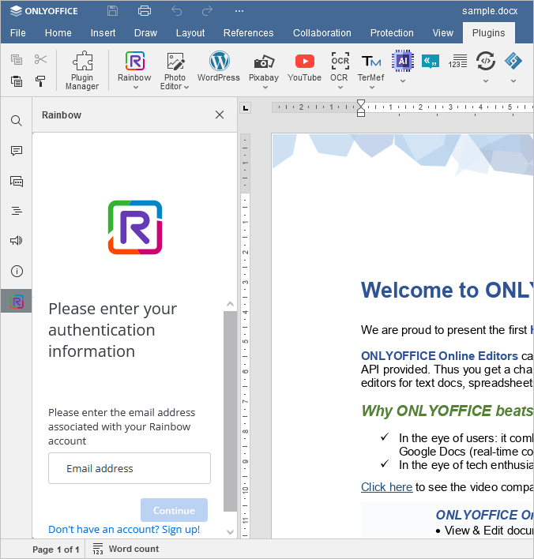
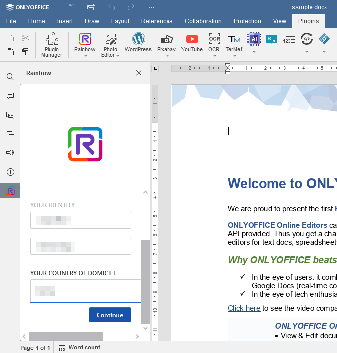
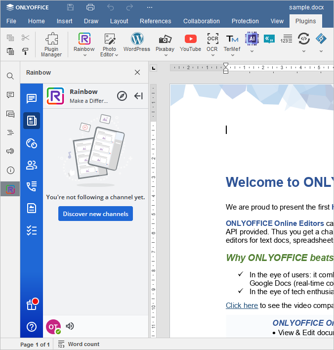

Komunikacija tokom uređivanja
U ONLYOFFICE Document Editor-u, uvek možete ostati u kontaktu sa kolegama i koristiti popularne onlajn mesindžere, kao što su Telegram i Rainbow.
Telegram i Rainbow dodaci nisu preinstalirani. Za informacije o instalaciji, pogledajte odgovarajući članak: Dodavanje dodataka u ONLYOFFICE Desktop Editore Dodavanje dodataka u ONLYOFFICE Cloud, ili Dodavanje novih dodataka na server, ili instalirajte dodatak pomoću Plugin Manager-a.
Telegram
Da biste započeli čet u Telegram dodatku,
- Prebacite se na karticu Dodaci i kliknite Telegram,
- unesite svoj broj telefona u odgovarajuće polje,
- čekirajte Ostavi me prijavljenim ako želite da sačuvate podatke za trenutnu sesiju i kliknite Dalje,
-
unesite kod koji ste dobili u Telegram aplikaciji,
ili
- prijavite se koristeći QR kod,
- otvorite Telegram aplikaciju na telefonu,
- idite na Podešavanja > Uređaji > Skeniraj QR,
- skenirajte sliku da biste se prijavili.
Sada možete koristiti Telegram za instant poruke unutar ONLYOFFICE interfejsa editora.
Rainbow
Da biste započeli čet u Rainbow dodatku,
- Prebacite se na karticu Dodaci i kliknite Rainbow,
-
registrujte novi nalog klikom na Prijavi se, ili se prijavite na već postojeći nalog. Unesite svoj email u odgovarajuće polje i kliknite Nastavi,

- unesite lozinku svog naloga,
- čekirajte Ostavi moju sesiju aktivnom ako želite da sačuvate podatke za trenutnu sesiju i kliknite Poveži,
-
popunite polja u prozoru Vaš identitet.

Sada je sve spremno i možete istovremeno ćaskati u Rainbow-u i raditi unutar ONLYOFFICE editora.
